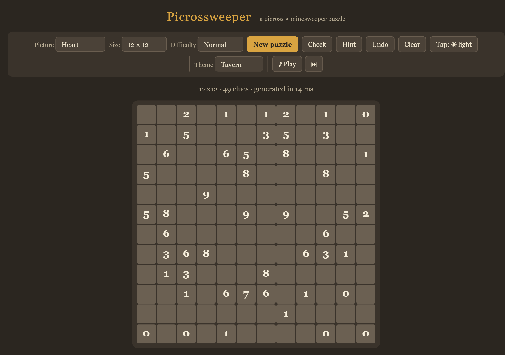
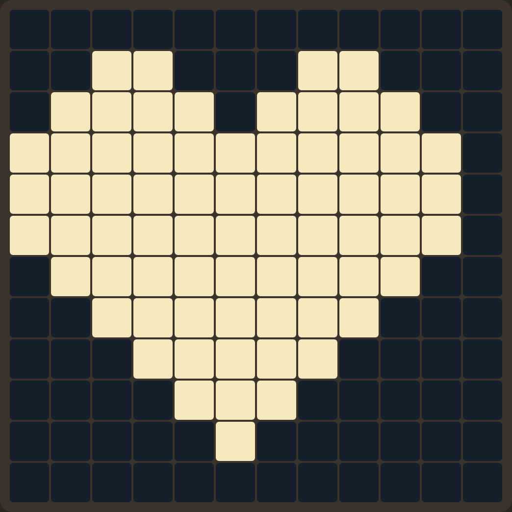

Picrossweeper is picross crossed with minesweeper. Every tile on the board is secretly either light or dark. Some tiles carry a number telling you how many light tiles are nearby. Work out the colour of every tile and the hidden picture appears.

A number counts the light tiles in the 3×3 block around it — and the numbered tile counts itself. That is the whole game.
So a numbered tile is not a special kind of tile. It is an ordinary tile that happens to tell you something, and you still have to colour it in like any other.
Here is one valid arrangement for each number. In each diagram the clue sits in the middle, and the count includes it. Notice that a number is not always light — the 0, the 1 and the 5 below are sitting on dark tiles, and any of the others could be too.
A tile at the edge of the grid has no neighbours outside it, so its block is smaller: an edge tile sees 6 tiles and a corner tile sees only 4. The largest number possible therefore depends on where the clue sits — a corner clue can never be higher than 4.
| To do this | Mouse | Touch |
|---|---|---|
| Mark a tile light | Left-click (hold and drag to paint several) | Tap. The Tap: ☀ light button chooses which colour a tap paints — press it to switch to dark. |
| Mark a tile dark | Right-click (hold and drag to paint several) | |
| Back to unknown | Click again with the same button | |
Dark tiles are drawn with an ✕ so you can tell "I decided this is dark" from "I haven't looked at this yet". Marking dark matters as much as marking light: it is what lets the next clue narrow down.
Once every tile in a clue's 3×3 block has been marked — light or dark, it doesn't matter which — the number fades to grey. The tile keeps its colour; only the digit changes. That is your "nothing left to read here" signal, so you can skim past it and look for clues that still have unknowns around them.
The grey means "you have answered this clue", not "you answered it correctly". A wrong block goes grey too.
Every puzzle is generated so it can be solved by pure logic — you never have to guess. Two moves will carry you through almost all of it.
Look at one clue and count what you know. If the lights it still needs equals the number of unknown tiles left in its block, all of them are light. If it needs none, all of them are dark.
The two extreme cases are the same move seen from each end: a 0 paints its whole block dark immediately, and a 9 paints its whole block light.
When two clues sit side by side, most of their blocks are the same tiles. Whatever the shared part contributes, it contributes to both — so the difference between the two numbers has to come from the tiles only one of them can see.
The 6 sees the three left-hand columns; the 3 sees the three right-hand columns. They share the two columns in the middle, which contribute the same amount to both. The 6 is exactly 3 more than the 3, and the only tiles the 6 has that the 3 doesn't are the 3 tiles in the far-left column — so all three must be light. That accounts for the whole difference, which leaves the far-right column, seen only by the 3, contributing nothing: all dark.
Nothing else is needed. When you get stuck, it is almost always because there is a pair of overlapping clues you haven't compared yet.
The two moves above are all you strictly need. Everything here is the same logic wearing a different hat — recognising it faster means fewer rows solved one tile at a time.
A block's maximum depends on where it sits: a corner block is only 4 tiles, an edge block only 6. So a corner clue of 4 or an edge clue of 6 is just as final as an interior 9 — every tile in that smaller block is light, immediately, no comparison needed.
Nothing about the comparison trick cares which direction the clues sit. Two clues one above the other overlap exactly like two side-by-side clues do — it's just the row only one of them can see that resolves, instead of a column.
This isn't about the numbers 6 and 3 specifically — it's any adjacent pair exactly 3 apart: 8 and 5, 7 and 4, 6 and 3, 5 and 2, 4 and 1, all work the same way. If a pair like that lines up down several rows, don't solve them one row at a time. Each row's comparison overlaps the next row's, so a run of three matching rows resolves a strip two rows taller than the run itself, for free.
A maxed-out clue doesn't stop at solving its own block — its light tiles spill into a neighbour's block too. Once that neighbour's own number is already satisfied by what's known, whatever it has left over must be dark. And that emptiness can hand off to the next clue over, the same way.
Diagonal clues overlap in a small square instead of a clean line, so the leftover region is L-shaped and rarely forces anything on its own. But if one of the pair is already saturated — a 0 or the maximum for its position — its whole block, overlap included, is already known, and that's often enough to finish the other clue's leftover tiles.
Clues two columns apart don't touch, but their blocks still overlap by one column instead of two. The exclusive zone on each side grows to 2 columns (6 tiles), so it takes a bigger swing — a difference of 6 — to force both sides all the way. The shared column in the middle doesn't fully resolve, but its count does: you know exactly how many of its 3 tiles are light before you know which ones.
Two side-by-side clues with the same number have a difference of zero, so on their own they can't paint anything: they just tell you the two outer columns hold equal counts of light tiles. That's not nothing — the moment some other clue pins down one side, you get the other side's count for free.
| Button | What it does |
|---|---|
| Check | Outlines every tile you have marked in the wrong colour, in red. It doesn't tell you what the right answer is. Click it a second time to clear those outlines again. |
| Hint | Fills in one tile that is deducible right now, and flashes it so you can see which clue gave it away. |
| Undo | Steps back one mark at a time (Ctrl+Z). |
| Clear | Wipes your marks but keeps the same puzzle. |
| New puzzle | Generates a fresh one (N). |
There's a second kind of outline you'll see without pressing anything. The moment a clue's own number becomes impossible — you've marked more light tiles around it than its number allows, or so many dark tiles that the number can no longer be reached — that clue tile itself gets outlined in your theme's accent colour, not red. It's a live check with no button: it updates after every mark, even before you've filled in the clue's whole 3×3 block, and it points at the clue rather than at which of its tiles is actually wrong.
The two outlines never show at once. Red means Check found a mistake; the accent colour means the live check spotted an impossible clue on its own. While Check's red outlines are up, the live check holds off — click Check again to clear them and it picks back up.
Mark every tile correctly and the board locks, the clue digits fade away, and the picture is left standing on its own.

| Setting | What to know |
|---|---|
| Picture | The hidden image. Random generates an organic blob instead of pixel art — it usually produces the most varied, least repetitive clues. |
| Size | 10×10 up to 25×25. Start at 10×10 or 12×12; the bigger boards are the same rules with more bookkeeping. |
| Difficulty | Relaxed leaves plenty of spare clues, so there is usually an easy move somewhere. Normal and Hard strip out redundant clues and avoid trivial 0s and 9s. Expert keeps nothing that isn't strictly necessary — expect to lean on Move 2 constantly. |
| Theme | Tavern (warm wood) or Proverbs (the palette of the game that inspired this one). |
| Music | ♪ plays a rotating instrumental playlist streamed from Wikimedia Commons; ⏭ skips, and the slider sets the volume. |
When the small boards stop being a challenge, the giant grid is the same rules on one continuous 54,000-tile painting that you pan and zoom like a map, solved a region at a time.